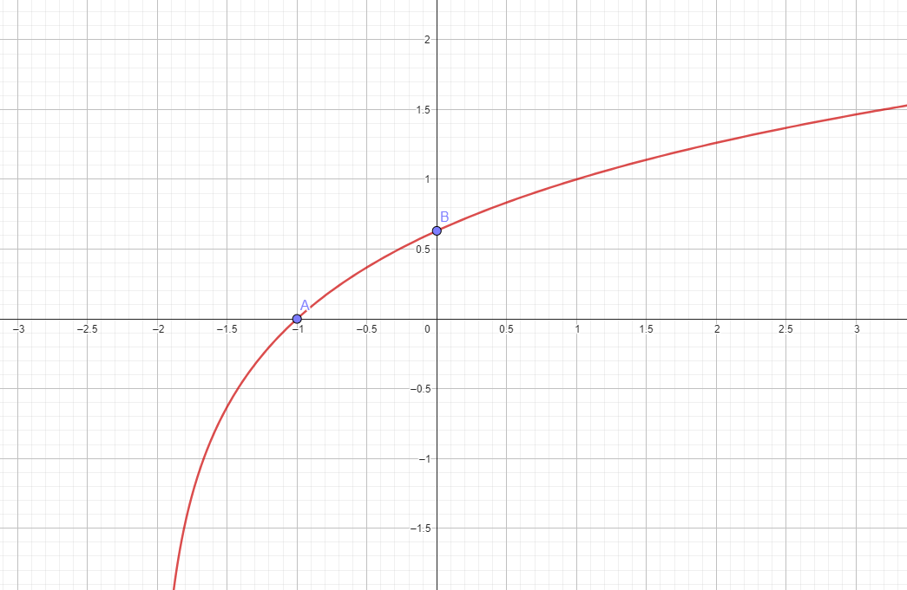

“A Matemática Financeira tem por objetivo estudar a evolução do valor do dinheiro ao longo do tempo”(DAL ZOT, 2006).
Os principais conceitos da matemática financeira são:
Capital inicial: valor inicial de uma aplicação.
Símbolos: C
Taxa de juros: taxa do rendimento do dinheiro em um período de tempo
Símbolos: i
Prazo: tempo que o dinheiro ficará rendendo. Pode ser dias, meses, anos, etc...
Símbolos: n
Juros: rendimento do capital inicial aplicado.
Símbolo: J
Montante: juros somados ao capital inicial.
Símbolo: M
Na matemática financeira há duas capitalizações: a simples e a composta
A capitalização simples o rendimento forma um gráfico de crescimento linear, já que o juros são obtidos a partir do valor inicial.
As fórmulas dos juros simples são:
J=C+i.n
M=J=C
M=C(1+in)
Ex: (Vunesp) Num balancete de uma empresa consta que certo capital foi aplicado a uma taxa de 30% ao ano durante
8 meses, rendendo juros simples no valor de R$ 192,00. O capital aplicado foi de:
A) R$ 288,00.
B) R$ 880,00.
C) R$ 960,00.
D) R$ 2.880,00.
Já a capitalização composta forma um gráfico de crescimento exponencial, pois os juros são obtidos do valor inicial mais os juros obtidos posteriormente.
A fórmula dos juros compostos é:
M=C(1+i)^n
(Diferente dos juros simples, o prazo (n) agora vai no
expoente. Por isso o crescimento dele é exponencial)
Ex: Aplicando hoje na caderneta de poupança a quantia de R$ 20.000,00, qual será o montante gerado ao final de 4 anos, sabendo que a rentabilidade mensal é de 0,5%?
Para construírmos o gráfico, utilizaremos 4 passos:
Se a base (b) for maior que 1, então o gráfico será crescente ↑.
Se a base estiver entre 0 e 1, será decrescente ↓.
Quando a função tiver um sinal negativo na frente e a base da função for maior que 1, será decrescente.
Quando a função tiver um sinal negativo na frente, mas a base estiver entre 0 e 1, ela será crescente.
Segue exemplo para maior compreensão:
Para descobrir o domínio da função é só pegar o logaritmando e fazer maior que zero.
Ex: f(x)=4log³(x+2)
x+2>0
x>-2
Para acharmos em que ponto corta o eixo X precisamos zerar o f(x).
Ex: f(x)=4log³(x+2)
3^0=x+2
x=1-2
x=1-2/1
x=-1
Para descobrir onde o gráfico corta o eixo Y, zeramos o x.
Ex: f(x)=4log³(x+2)
f(x)=4log³(0+2)
f(x)=4.0,6309
f(x)=2,5236
Então o gráfico ficará assim:
